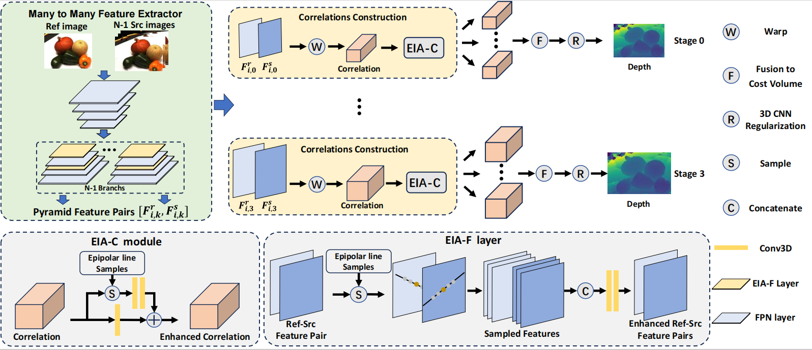

1Northwestern Polytechnical University
2Rocket Force University of Engineering
* denotes corresponding author
Despite the promising performance achieved by the learning-based multi-view stereo (MVS) methods, the commonly used feature extractors still struggle with the perspective transformation across different viewpoints. Furthermore, existing methods generally employ a ``one-to-many'' strategy, computing the correlations between the fixed reference image feature and multiple source image features, which limits the diversity of feature enhancement for the reference image. To address these issues, we propose a novel Epipolar Line Information Aggregation (EIA) method. Specifically, we present a feature enhancement layer (EIA-F) that utilizes the epipolar line information to enhance image features. EIA-F employs a ``many-to-many'' strategy, adaptively enhancing the reference-source feature pairs with diverse epipolar line information. Additionally, we propose a correlation enhancement module (EIA-C) to improve the robustness of correlations. Extensive experiments demonstrate that our method achieves state-of-the-art performance across multiple MVS benchmarks, particularly in terms of reconstruction integrity.
(a) Visualization of the ``one-to-many'' strategy, the same reference image feature is used to match various source image features to compute correlations. (b) Visualization of our proposed ``many-to-many'' strategy. The same reference feature and different source features form a series of feature pairs. For each pair, pixel-wise sampling is utilized to extract epipolar line information for each point. Note that, the reference feature exhibits different epipolar line correspondence across various feature pairs, thus corresponding to distinct epipolar line information. Then, the proposed EIA-F layers are employed to aggregate the corresponding epipolar line information to enhance the features. This enables the reference feature to be adaptively enhanced with distinct epipolar line information, yielding various enhanced reference features.
Network architecture of our method. The epipolar line information aggregation (EIA) strategy is utilized to enhance the feature maps and correlations. A ``many-to-many'' feature extractor is proposed to extract multi-scale reference-source feature pairs. Meanwhile, the epipolar line information aggregation-based network layers (EIA-F) are applied to the feature extractor to perform feature enhancement along the epipolar line direction. The correlations are constructed based on the feature pairs and then enhanced by an epipolar line information-based correlation enhancement module (EIA-C). Finally, the enhanced correlations are fused to estimate the depth map with the regularization module.
Reconstruction comparison with state-of-the-art works on the DTU dataset. Our method achieves more complete point cloud reconstruction performance in challenging areas.
Point cloud results of our method. The results for the DTU dataset are shown in the top row, while the results for the Tanks \& Temples dataset are presented in the bottom row.
@ARTICLE{wang2024eiamvs,
author={Wang, Shaoqian and Li, Bo and Yang, Jian and Dai, Yuchao},
journal={IEEE Robotics and Automation Letters},
title={Adaptive Feature Enhanced Multi-View Stereo With Epipolar Line Information Aggregation},
year={2024},
volume={9},
number={11},
pages={10439-10446}}